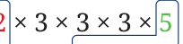
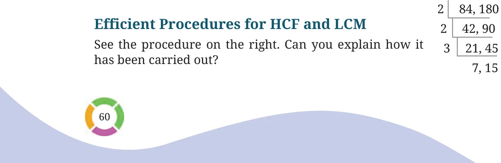
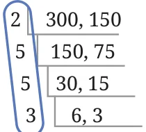
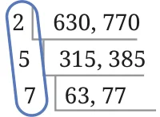
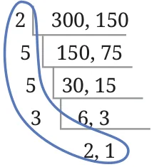
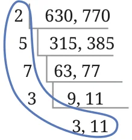
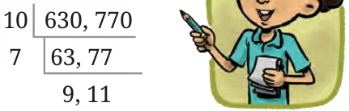

If both numbers are doubled, then both numbers get an extra factor of 2 in their prime factors. This 2 will be included as a factor in the largest common subpart, and so the HCF will double. For example, consider the numbers 270 and 50.
\(270 = 2 50 = 2 \times 5 \times\)

\(HCF = 2 \times 5 = 10\)
Let us double these numbers to get 540 and 100.

\(540 = 100 =\)
\(HCF = 2 \times 2 \times 5 =20\).
Consider the following two multiples of \(14 - 14 \times 6\), \(14 \times 9\). What is their HCF? Clearly, 14 is a common factor. Is it also the highest common factor? To see it, let us calculate the prime factorisations.
\(14 \times 6 = \times 2 \times 3\)
\(14 \times 9 = \times 3 \times 3\)
\(HCF = 14 \times 3 = 42\).
Here are some more numbers where both numbers are multiples of the same number. Find their HCF:
- (a)\(18 \times 10\), \(18 \times 15\) (b) \(10 \times 38\), \(10 \times 21\)
- (c)\(5 \times 13\), \(5 \times 20\) (d) \(12 \times 16\), \(12 \times 20\)
In which of these cases is the HCF the same as the common multiplier, like problem (b) where the HCF is 10? Explore a few more examples of this type to understand when this happens.

This is similar to the procedure for prime factorisation. At each step, the two numbers are divided by a common prime factor, and the two quotients are written down in the next row. This continues till we get two numbers that do not have any common prime factors. How do we use this to find the HCF of 84 and 180? Explore. [Hint: Observe that \(84 = 2 \times 2 \times 3 \times 7\), and \(180 = 2 \times 2 \times 3 \times 15\) similar to prime factorisation]
Find the HCF in the following cases.


2, 1
\(HCF = 2 \times 5 \times 5 \times 3 HCF = 2 \times 5 \times 7\)
This procedure not only gives the HCF but can also be used to find the LCM! Can you see how?


\(LCM = 2 \times 5 \times 5 \times 3 \times 2 \times 1 LCM = 2 \times 5 \times 7 \times 3 \times 3 \times 11\)
Why are these the LCMs? [Hint: Will the product of the factors marked as the LCM of 300 and 150 contain the prime factorisations of both 300 and 150? Is this the smallest such number?] Guna says “I found a better way to factorise to find HCF/LCM. This is faster than what was taught in class!” “For the numbers 300 and 150, I can first directly divide both numbers by 50.The HCF will be \(50 \times 3\). 50 300, 150 3 6, 3 2, 1
The LCM will be \(50 \times 3 \times 2 \times\) 1”. Anshu also tried to remove the bigger common factors. “For 630 and 770, I will divide both numbers by 10 first. Now, I can divide them by 7. The HCF will be \(10 \times 7 = 70\) The LCM will be \(10 \times 7 \times 9 \times 11 =\) 6930”. Can you see why this works? We need not restrict ourselves to dividing only one prime factor at a time. Both numbers can be divided by whatever common factor we are able to identify.

You can try this method for these pairs of numbers.
- (a)90 and 150 (b) 84 and 132